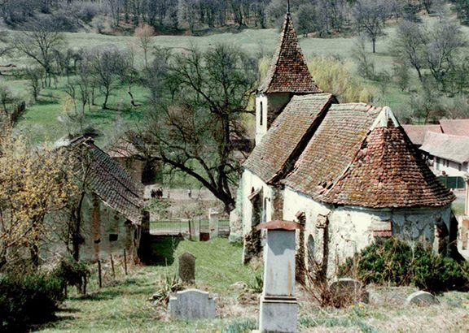
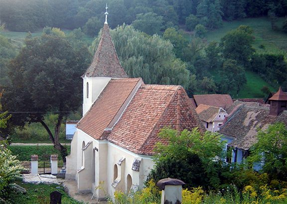
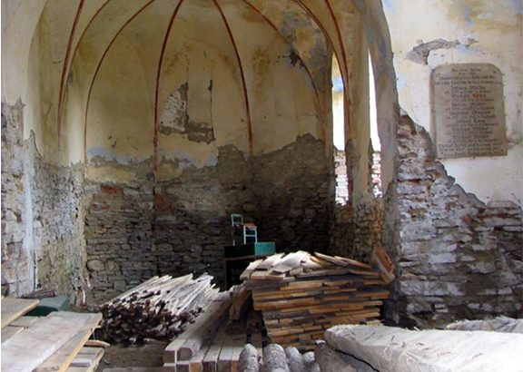
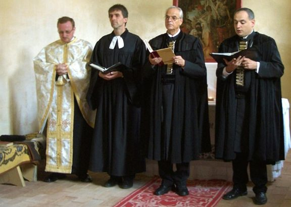

Floresti Church
Floresti Church was built in 1424 by Antonius and Markus Bethlen, local aristocrats. The tower, on the west side of the entrance once made of wood burnt down in 1788. The present tower dates from 1835 and has a roof with a pyramid form. The nave has a simple wood roof, the gothic choir has a vault with ribs. The stone walls are supported by many buttresses. The neo-gothic altar was from 1899, and the remains of the old one (1550) are in the Sighisoara Museum.


It had been deconsecrated and was in a derelict state when the Trust came across it in 2001. The Lutheran Church elders gave the church to the MET on a long lease in exchange for restoration. After it was surveyed, the Trust saved the roof of the building, which was in danger of collapse.
Work began using a German “journeyman” master-builder to manage a team of four men from the village who assisted with the repairs.
The work on the exterior and massive work on the interior was completed in 2008.


The interior before restoration and the blessing ceremony with Bishop Klein
It was blessed by Bishop Klein in October of the same year and the church is now open to the public.